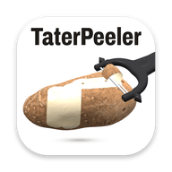

Get TaterPeeler
Last updated 10/28/26 - 2:09PM
The whole game, on your own device. Version 1.2.
Computers
iPad and iPhone
Your progress is saved on each device separately, so a fresh install starts at 0 potatoes.

Last updated 10/28/26 - 2:09PM
The whole game, on your own device. Version 1.2.
Your progress is saved on each device separately, so a fresh install starts at 0 potatoes.